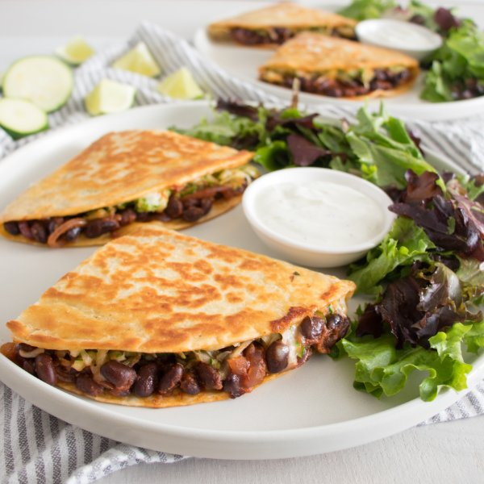

Black Bean-Zucchini Quesadilla with Zingy Greens & Lime Crema

Total Time
35 min
Nutrition (Per Serving)
644.8 kcalCalories
31.1 gProtein
79.7 gCarbs
23.8 gFat
Full nutrition table
| Calories | 644.8 kcal |
| Total fat | 23.8 g |
| Saturated fat | 6.7 g |
| Trans fat | 0.9 g |
| Cholesterol | 25.5 mg |
| Sodium | 1149.3 mg |
| Carbohydrates | 79.7 g |
| Fiber | 18.5 g |
| Sugars | 11.7 g |
| Protein | 31.1 g |
| Potassium | 1282.6 mg |
| Calcium | 419.3 mg |
| Iron | 7.1 mg |
| Vitamin A | 638.8 IU |
| Vitamin C | 31.6 mg |
| Vitamin D | 4.5 IU |
Cookware
Ingredients
- 2 (15 oz) cansblack beans
- 4large flour tortillas
- 1lime
- ½ (8 oz) blockmozzarella cheese
- 1 cupplain Greek yogurt
- 1 (5 oz) pkgspring mix (mixed greens)
- 1 (8 oz) cantomato sauce
- 1 mediumyellow onion
- 2 mediumzucchini squash
- apple cider vinegar
- black pepper
- cayenne pepper
- chili powder
- cumin, ground
- extra virgin olive oil
- salt
Steps
- Wash and dry the fresh produce. (Skip the mixed greens if they came pre-washed.)2 medium zucchini squash
1 lime
1 (5 oz) pkg spring mix (mixed greens) - Preheat a large skillet over medium heat.
- While the skillet heats up, peel and thinly slice onion into half moons.1 medium yellow onion
- Once the skillet is hot, add oil and swirl to coat the bottom. Add onion, chili powder, and salt; cook, stirring occasionally, until softened, 3-4 minutes.4 tsp extra virgin olive oil
2 tsp chili powder
½ tsp salt - Meanwhile, drain and rinse beans in a colander.2 (15 oz) cans black beans
- Add beans and tomato sauce to the skillet, stir to combine, and bring to a simmer. Reduce heat to medium-low and cook until the beans are warm and the sauce has reduced, 4-5 minutes. Transfer to a medium bowl and wipe the skillet clean with paper towels.1 (8 oz) can tomato sauce
- Meanwhile, trim and coarsely grate zucchini. Transfer to the colander and sprinkle with salt. Set the colander in a bowl to catch the excess moisture.½ tsp salt
- Zest and juice lime into a small bowl; add yogurt, salt, and pepper. Whisk to combine the crema and set aside.1 cup plain Greek yogurt
¼ tsp salt
⅛ tsp black pepper - Coarsely grate cheese.½ (8 oz) block mozzarella cheese
- Place grated zucchini in the middle of a clean towel, bring the corners together, and squeeze out excess moisture.
- To assemble the quesadillas, lay tortillas on a flat surface and divide beans, zucchini, and cheese between them, arranging it on one half of the tortilla; fold in half to close.4 large flour tortillas
- Return skillet to medium-high heat.
- Working in batches, drizzle the skillet with oil, and lay the assembled quesadillas in the pan. Cook until golden on both sides, 5-6 minutes, turning halfway through.2 tsp extra virgin olive oil
- Meanwhile, combine oil, vinegar, and spices in another medium bowl; whisk to combine the dressing. Add mixed greens and toss to combine the salad.4 tsp extra virgin olive oil
2 tsp apple cider vinegar
½ tsp cumin
¼ tsp salt
⅛ tsp cayenne pepper - Cut each quesadilla into wedges and divide between plates. Serve with salad and crema on the side. Enjoy!